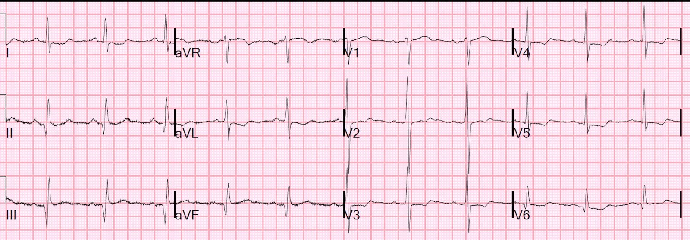
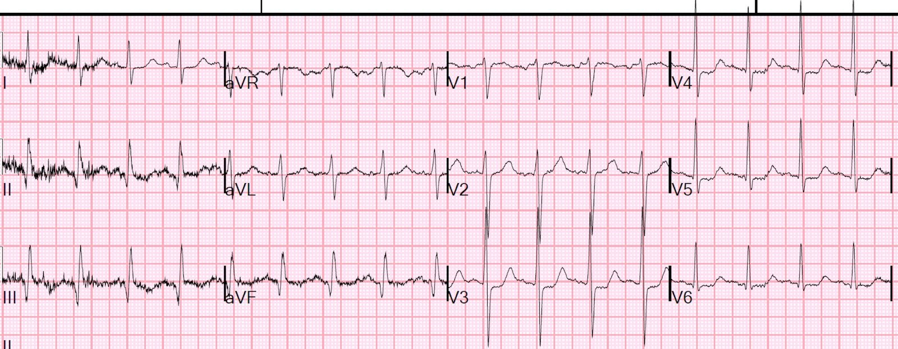
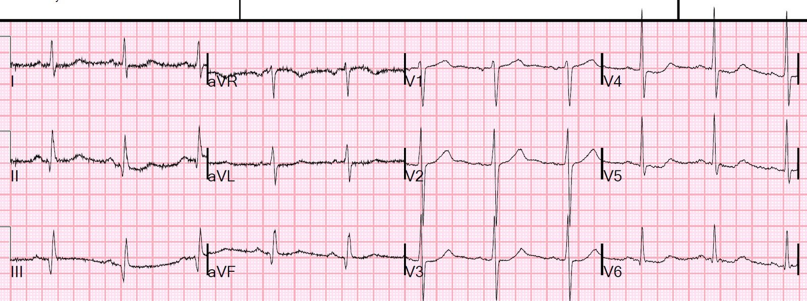
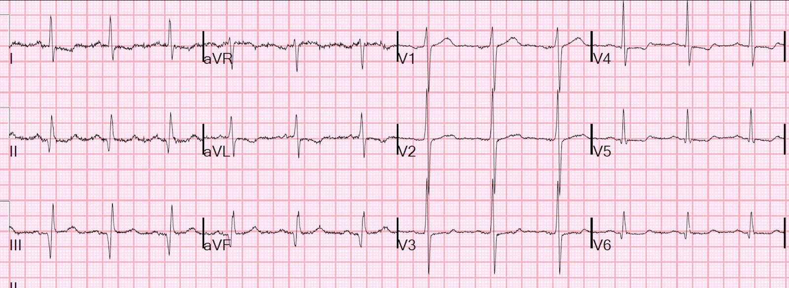
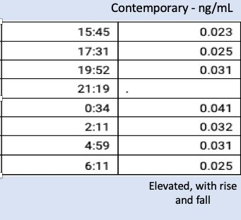
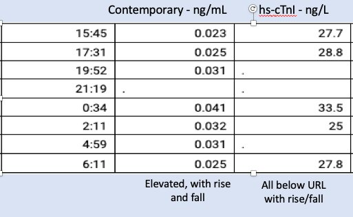
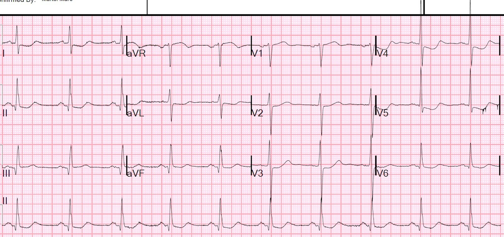
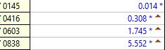
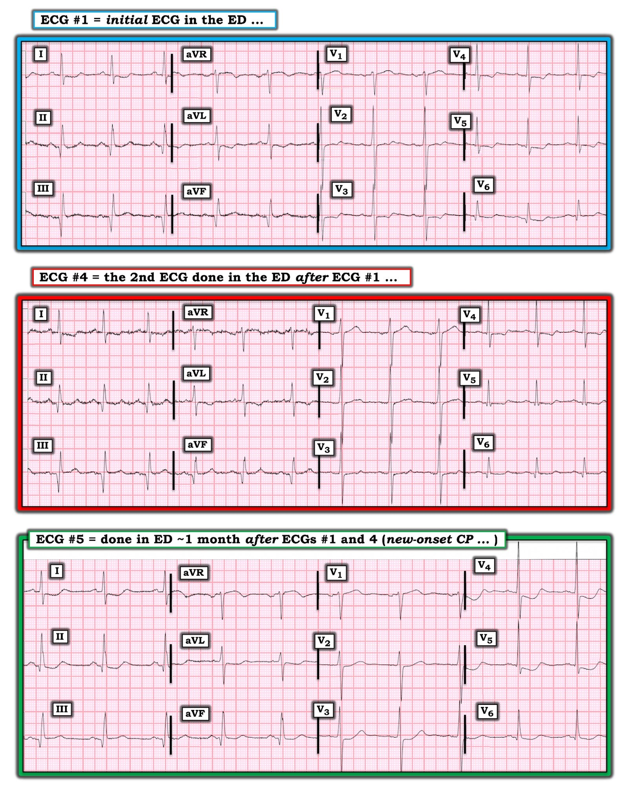

21/07/2020 — Một ca diễn giải sai troponin, bất chấp điện tâm đồ rất đáng nghi….
Bản dịch tiếng Việt của bài "A case of misinterpreted troponins, in spite of a very suspicious ECG…." – Dr. Smith’s ECG Blog. Giữ nguyên toàn bộ 11 hình ảnh của bản gốc.
Bệnh nhân nam 50 mấy tuổi, có tiền sử nhồi máu cơ tim, đến khám vì đau ngực và khó thở (SOB) từng cơn trong 2 ngày.
Đau ngực kéo dài hàng giờ mỗi cơn, được mô tả là đau kiểu màng phổi, không lan, nhưng giảm khi dùng nitroglycerin.
Đội cấp cứu ngoài viện (EMS) đã cho dùng nitroglycerin và aspirin liều đầy đủ. Điện tâm đồ trước viện tương tự điện tâm đồ đầu tiên tại khoa cấp cứu (ED).
Đây là điện tâm đồ tại khoa cấp cứu ở lần khám cấp cứu #1:


Có 3 điện tâm đồ trong một lần khám cấp cứu vì đau ngực trước đó một tháng. Hãy gọi đó là lần khám cấp cứu số không.
Đây là điện tâm đồ cuối cùng của lần khám cấp cứu số không:


Đây là điện tâm đồ đầu tiên của lần khám cấp cứu số không:


Ở lần khám cấp cứu số không, bệnh nhân có 3 lần troponin dưới giới hạn phát hiện. Troponin I thế hệ hiện hành (contemporary), Abbott, giới hạn phát hiện (LoD) = 0.010 ng/mL, giới hạn trên tham chiếu (URL) 99% = 0.030 ng/mL
Vậy quay lại lần khám số 1. Điện tâm đồ thứ 2 này đã được ghi.


Như vậy, có các thay đổi điện tâm đồ động (dynamic). Vì vậy, riêng các điện tâm đồ thôi cũng gần như đủ để chẩn đoán thiếu máu cục bộ trong bối cảnh đau ngực ở một bệnh nhân đã biết có bệnh mạch vành
Troponin I thế hệ hiện hành lần đầu là 0.023 ng/mL. Lần thứ hai là 0.025 ng/mL.
Bệnh nhân được nhập viện.
Nhóm điều trị nội trú đã ghi nhận các giá trị troponin thế hệ hiện hành này trong 15 giờ.


Nhóm điều trị nội trú quyết định rằng bệnh nhân đã được “loại trừ” nhồi máu cơ tim. Tại sao? Đây là một số trích dẫn:
“Điện tâm đồ ổn định x 2”
“không còn đau ngực”
“troponin 0.041 có xu hướng giảm về khoảng bình thường.”
“Vì bệnh nhân kể rằng thấy đỡ hơn khi đi đại tiện hoặc trung tiện, có thể cơn đau là đau quy chiếu từ bụng trên 2/2 (thứ phát do) táo bón, có thể gây kích thích cơ hoành.” “Cũng có thể, với tăng bạch cầu nhẹ, ho và sốt nhẹ x3 ngày, bệnh nhân bị nhiễm virus đường hô hấp trên (URI) kèm viêm cơ tim do virus mức độ nhẹ.”
“Đã loại trừ ACS và bệnh nhân phủ nhận mọi đau ngực khi ra viện.”
Các bác sĩ lâm sàng sẽ tìm mọi cách để giải thích cho qua các giá trị troponin trên bách phân vị thứ 99, vì troponin thường tăng trong những bệnh lý không phải ACS. Nhưng người ta phải 1) tìm ra một lời giải thích và 2) không có diễn biến tăng và/hoặc giảm, hoặc giải thích được diễn biến tăng và/hoặc giảm đó.
Troponin đang giảm KHÔNG có nghĩa là yên tâm. Nó có nghĩa là sự tăng troponin là cấp tính và ta đang thấy nó giảm sau khi đã tăng.
Điều thú vị là chúng tôi có một số giá trị troponin độ nhạy cao nhờ một nghiên cứu đang tiến hành (cột ngoài cùng bên phải):


Ở mức 33.5 ng/L, giá trị này gần chạm URL bách phân vị thứ 99 ở nam, nhưng chưa hẳn. Vì vậy, theo định nghĩa, đây không phải là nhồi máu cơ tim. Tuy nhiên, điều này không có nghĩa đây không phải là ACS. Có diễn biến tăng rồi giảm tuy tối thiểu nhưng thật sự, song chưa bao giờ vượt bách phân vị thứ 99. Cùng với các dấu hiệu trên điện tâm đồ, kể cả khi bạn chỉ có các giá trị troponin độ nhạy cao, tình huống này vẫn nên được xem là đau thắt ngực không ổn định, như diễn tiến sau đó sẽ chứng minh (dĩ nhiên, đau thắt ngực không ổn định là một dạng ACS)
Bệnh nhân quay lại một tháng sau đó vì đau ngực, khởi phát trong lúc ngủ, kéo dài 2 giờ


Đây là các giá trị troponin ở lần khám này (thế hệ hiện hành, không phải độ nhạy cao)


Bệnh nhân được chụp mạch vành và PCI ngay lập tức vì đau không kiểm soát được:
LCx: hẹp nặng (99%) ở đoạn giữa động mạch mũ (CX) trước nhánh bờ tù thứ nhất. Đây là tổn thương thủ phạm.
Tổn thương ở đoạn giữa CX: phân đoạn gần. Hẹp 99%, dài 14 mm, giảm xuống còn 0%. Trước thủ thuật ghi nhận dòng chảy TIMI III. Sau thủ thuật có dòng chảy TIMI III. Dòng chảy phía xa (run off) tốt.
Những điểm cần học:
1. Hãy học các dấu hiệu điện tâm đồ động (dynamic) này, vốn rất đáng nghi thiếu máu cục bộ.
2. Việc diễn giải tăng troponin rất phức tạp, và còn phức tạp hơn nữa với troponin độ nhạy cao
3. Diễn biến tăng rồi giảm với một giá trị trên bách phân vị thứ 99, trong bối cảnh có triệu chứng thiếu máu cục bộ, là nhồi máu cơ tim cấp
4. Diễn biến tăng rồi giảm của troponin độ nhạy cao, kể cả khi dưới bách phân vị thứ 99, rất đáng nghi đau thắt ngực không ổn định.

===================================
BÌNH LUẬN CỦA TÔI, bởi KEN GRAUER, MD (21/7/2020):
===================================
Ca bệnh này truyền tải một bài học quan trọng — đó là tầm quan trọng của việc nhận ra các thay đổi điện tâm đồ động — hiểu được ý nghĩa của những thay đổi đó, đặc biệt khi chúng xảy ra đi kèm với triệu chứng — và sau đó hành động tương ứng.
- Bệnh nhân trong ca hôm nay là một người đàn ông 50 mấy tuổi có tiền sử nhồi máu cơ tim trước đây. Ông đến khoa cấp cứu vì đau ngực từng cơn kéo dài 2 ngày, có cả đặc điểm điển hình lẫn không điển hình của nguyên nhân do tim.
- Tổng cộng 5 điện tâm đồ đã được Dr. Smith trình bày ở trên. Tôi tập trung bình luận vào 3 trong số 5 bản ghi này, được tôi đánh số theo thứ tự chúng được trình bày ở trên (Hình 1).
- LƯU Ý: Phần bàn luận xuất sắc của Dr. Smith ở trên mang lại hiểu biết sâu sắc về ứng dụng lâm sàng của các giá trị troponin liên tiếp trong ca hôm nay. Phần bình luận của tôi nhằm hình dung rằng bạn không có bất kỳ kết quả troponin liên tiếp nào — vì tôi tin rằng quyết định lâm sàng tối ưu trong ca hôm nay hoàn toàn có thể đưa ra ngay cả khi không có kết quả troponin.


SUY NGHĨ CỦA TÔI về 3 điện tâm đồ này: Như mọi khi — tôi ưu tiên đánh giá có hệ thống điện tâm đồ ban đầu — rồi đối chiếu điện tâm đồ ban đầu này với bệnh sử lâm sàng — và sau đó so sánh từng chuyển đạo một giữa bản ghi ban đầu này với các điện tâm đồ được ghi sau đó.
Bắt đầu với điện tâm đồ #1 = điện tâm đồ ban đầu ghi tại khoa cấp cứu ở người đàn ông 50 mấy tuổi này, đã biết có bệnh mạch vành và có bệnh sử 2 ngày đau ngực từng cơn, không-hoàn-toàn-điển-hình.
- Có nhiễu đường nền ở các chuyển đạo chi của điện tâm đồ #1 — tuy nhiên không đủ để cản trở việc đọc. Nhịp xoang với tần số ~65-70/phút — các khoảng (PR/QRS/QTc) và trục mặt phẳng trán bình thường — và không có tiêu chuẩn đặc hiệu nào của lớn các buồng tim.
- Sóng Q lớn thấy ở từng chuyển đạo thành dưới. Sóng q nhỏ hơn thấy ở các chuyển đạo ngực bên (mặc dù sóng Q ở chuyển đạo V6 trông có vẻ sâu và rộng hơn mong đợi một chút, nhất là khi biên độ sóng R ở chuyển đạo này tương đối khiêm tốn).
- Tăng tiến sóng R đáng chú ý ở chỗ chuyển tiếp đột ngột từ phức bộ rS chủ yếu âm ở chuyển đạo V1 — sang một phức bộ hai pha rất lớn ở chuyển đạo V2, trong đó biên độ sóng R đạt tới 16 mm!
- Về thay đổi ST-sóng T ở các chuyển đạo chi — Hình dạng ST-T ở các chuyển đạo III và aVF trông như có thể có ST chênh lên nhẹ (kèm đoạn khởi đầu ST thẳng đuỗn ở chuyển đạo aVF), tuy những thay đổi này tinh tế và khó định lượng. Có ST chênh xuống võng nhẹ ở các chuyển đạo bên cao I và aVL, mỗi chuyển đạo đều có sóng T hai pha phần cuối biên độ thấp.
- Về thay đổi ST-sóng T ở các chuyển đạo ngực — Sóng T ở chuyển đạo V1 dương. Tiếp theo là ST-T dẹt không đặc hiệu ở chuyển đạo V2 — rồi tiến triển thành điểm J chênh xuống nhẹ-nhưng-thật với đoạn ST võng xuống ở các chuyển đạo V3 đến V6. Hình dạng này tương tự ST-T mà chúng ta đã ghi nhận ở các chuyển đạo I và aVL.
- Có vẻ như có sóng U nhỏ hòa lẫn vào sóng T đứng trước ở các chuyển đạo V1 đến V3.
NHẬN ĐỊNH CỦA TÔI về các chuyển đạo CHI trên điện tâm đồ #1:
- Tôi RẤT MUỐN được xem một điện tâm đồ trước đây (điện tâm đồ nền) của bệnh nhân này! Vì không có — điều chúng ta có thể nói là chắc chắn đã có một nhồi máu cơ tim thành dưới vào một thời điểm nào đó. Tôi nghi đây là nhồi máu cũ — nhưng với các dấu hiệu tinh-tế-nhưng-thật đã mô tả ở gạch đầu dòng trước (nhất là các thay đổi ST-T ở chuyển đạo I và aVL) — tôi không thể loại trừ khả năng có một biến cố gần đây (có lẽ chồng lên nhồi máu thành dưới trước đó).
NHẬN ĐỊNH CỦA TÔI về các chuyển đạo NGỰC trên điện tâm đồ #1:
- Vùng chuyển tiếp sớm đột ngột với sóng R cao bất ngờ ngay ở chuyển đạo V2 là bất thường, và có ý nghĩa chưa chắc chắn. Nó có thể phản ánh nhồi máu cơ tim thành sau trước đây (đi kèm với các sóng Q lớn ở chuyển đạo thành dưới) — hay một bệnh lý cấu trúc nào đó bên dưới — hay một lỗi kỹ thuật nào đó khi đặt điện cực.
- Đáng lo ngại hơn — là các thay đổi ST-T ở các chuyển đạo V2 đến V6. Tuy chúng không hẳn trông cấp tính — chúng có thể phản ánh thiếu máu cục bộ ở bệnh nhân đã biết có bệnh mạch vành và có triệu chứng mới trong 2 ngày.
- ĐIỂM THEN CHỐT (PEARL) #1 — Sóng T ở chuyển đạo V1 bình thường có thể âm, dẹt hoặc dương (trong trường hợp này ST chỉ được chênh lên tối thiểu). Ở người lớn, sóng T bình thường dương ở các chuyển đạo ngực khác, với biên độ sóng T tương đối tương xứng với biên độ QRS ở các chuyển đạo đó. Một khái niệm hữu ích cần biết là “cân đối sóng T trước tim” — theo đó kích thước sóng T dương ở chuyển đạo V1 không được lớn hơn kích thước sóng T dương ở chuyển đạo V6. Khi điều này xảy ra — gợi ý thiếu máu cục bộ (Tewelde và cs. — West J Emerg Med 18[4]:601-606, 2017).
- ĐIỂM THEN CHỐT (PEARL) #2 — Sóng T ở chuyển đạo V1 của điện tâm đồ #1 không bình thường. Tuy tinh tế — đỉnh của sóng T này đầy đặn hơn mức bình thường. Áp dụng khái niệm “cân đối sóng T trước tim” (từ Pearl #1) chứng minh rằng sóng T ở chuyển đạo V1 của điện tâm đồ #1 không bình thường — vì nó rõ ràng lớn hơn (dương hơn) sóng T rất nhỏ ở chuyển đạo V6.
- Các sóng U tôi ghi nhận ở trên tại chuyển đạo V1 đến V3 là nhỏ. Hạ kali máu (và/hoặc hạ magnesi máu) luôn là một khả năng khi có sóng U (nhất là khi có một số thay đổi ST-T ở các chuyển đạo khác) — và xét nghiệm sinh hóa chắc chắn sẽ là một phần của đánh giá tại khoa cấp cứu.
- Sóng Q hơi lớn-hơn-mong-đợi ở chuyển đạo V6 có thể là một phần trong bức tranh của các sóng Q thành dưới mà chúng ta đã ghi nhận (tức là nhồi máu cơ tim dưới-bên trước đây).
ĐIỀU CỐT LÕI về điện tâm đồ #1:
- Điện tâm đồ #1 không bình thường. Dù vậy — không có dấu hiệu bất thường nào tôi mô tả ở trên nhất thiết là cấp tính. Và chúng ta không có điện tâm đồ trước đây để so sánh … Tôi sẽ diễn giải điện tâm đồ này là phù hợp với nhồi máu cơ tim thành dưới trước đây (có thể là nhồi máu dưới-bên), kèm thay đổi ST-T ở nhiều chuyển đạo phù hợp với thiếu máu cục bộ chưa rõ thời điểm, có thể gần đây. Rõ ràng cần thêm nhiều thông tin để quyết định cách xử trí tối ưu cho bệnh nhân này.
SUY NGHĨ CỦA TÔI về điện tâm đồ #4: Chúng ta được biết điện tâm đồ #4 là điện tâm đồ ghi lại ở bệnh nhân này, người có điện tâm đồ thứ 1 trình bày trong Hình 1. Chúng ta được biết bệnh nhân đã được nhập viện, có lẽ dựa trên các giá trị troponin liên tiếp trên bách phân vị thứ 99 — nhưng các bác sĩ điều trị cho rằng bệnh nhân có “điện tâm đồ ổn định X2” + hết đau ngực + giá trị troponin không đủ cao để khẳng định ACS.
- Điểm MẤU CHỐT: Một khi bạn đã đánh giá có hệ thống điện tâm đồ ban đầu chi tiết như tôi minh họa ở trên cho điện tâm đồ #1— việc so sánh các bản ghi liên tiếp trở nên DỄ DÀNG. Chỉ cần so sánh từng chuyển đạo một giữa 2 bản ghi kèm đối chiếu lâm sàng với mọi thay đổi về triệu chứng của bệnh nhân tại thời điểm ghi điện tâm đồ theo dõi.
- Theo những gì tôi suy đoán được từ bệnh sử đã trình bày — triệu chứng của bệnh nhân đã giảm vào lúc ghi điện tâm đồ #4.
- Điện tâm đồ #4 — có nhiều nhiễu đường nền hơn một chút so với điện tâm đồ #1, nhưng chắc chắn vẫn đọc được. Nhịp vẫn là nhịp xoang với tần số hơi nhanh hơn. Tôi thấy không có thay đổi đáng kể về hình dạng QRST ở các chuyển đạo chi. Tuy nhiên, có những thay đổi tinh-tế-nhưng-thật ở hầu hết các chuyển đạo ngực. Cụ thể — sóng T ở chuyển đạo V1 trông dương hơn (kể cả khi đã tính đến biên độ QRS tăng ở chuyển đạo V1 của điện tâm đồ #4) — và điểm J chênh xuống tinh tế kèm đoạn ST võng xuống ở một số chuyển đạo ngực rõ ràng ít hơn so với ở điện tâm đồ #1.
- Ghi nhớ khái niệm cân đối sóng T trước tim mà tôi đã mô tả ở trên trong Pearl #1 và #2 — Chẳng phải sự chênh lệch về độ dương của sóng T giữa chuyển đạo V1 và V6 ở điện tâm đồ #4 còn nổi bật hơn nhiều sao!
- Vì vậy — Vì các thay đổi ST-T ở nhiều chuyển đạo có mặt trong lúc khó chịu ở ngực (vào thời điểm điện tâm đồ #1 được ghi) đã cải thiện nhiều vào thời điểm sau đó khi triệu chứng của bệnh nhân đã hết (vào thời điểm điện tâm đồ #4 được ghi) — nên có thay đổi điện tâm đồ động. Điều này xác định thiếu máu cục bộ đang diễn ra.
ĐIỂM THEN CHỐT (PEARL) #3 — Lợi ích của việc so sánh các bản ghi liên tiếp từng chuyển đạo một — là các dấu hiệu điện tâm đồ thoạt đầu có vẻ tinh tế thường sẽ cho thấy thay đổi rõ rệt khi so sánh liên tiếp. Và nếu sự cải thiện của các thay đổi thiếu máu cục bộ trên điện tâm đồ có tương quan với sự cải thiện triệu chứng lâm sàng — thì bạn đã chứng minh được thiếu máu cục bộ đang diễn ra.
- ĐIỀU CỐT LÕI sau khi xem điện tâm đồ #4: Ngay cả khi không có các giá trị troponin tăng mà Dr. Smith đã nêu bật — thông tim lẽ ra đã phải được thực hiện cho bệnh nhân này trước khi ra viện. Hãy nhớ rằng người đàn ông 50 mấy tuổi này đã biết có bệnh mạch vành — và ông đến khoa cấp cứu với triệu chứng mới — và ông đã cho thấy thay đổi điện tâm đồ động trên các điện tâm đồ #1 và #4, đi kèm với việc hết khó chịu ở ngực.
- LƯU Ý: Để xem thêm một ví dụ phân tích chi tiết cho thấy các thay đổi điện tâm đồ động — HÃY XEM phần bàn luận của Dr. Smith và Bình luận của tôi ở cuối trang trong bài đăng ngày 15 tháng Chín năm 2018 trên Dr. Smith’s ECG Blog.
SUY NGHĨ CỦA TÔI về điện tâm đồ #5: Khoảng 1 tháng sau khi ra viện — bệnh nhân quay lại khoa cấp cứu vì một đợt đau ngực mới khác làm ông thức giấc. Điện tâm đồ #5 là điện tâm đồ ban đầu khi ông đến khoa cấp cứu. Cơn đau ngực của ông không kiểm soát được vào lúc ghi điện tâm đồ #5.
- Vì điện tâm đồ cuối cùng trong hồ sơ của bệnh nhân này là điện tâm đồ #4 (được ghi vào lúc bệnh nhân không đau) — Chúng ta nên so sánh điện tâm đồ mới ( = điện tâm đồ #5) với bản ghi gần nhất trước đó ( = điện tâm đồ #4).
- Nhiễu là tối thiểu trên bản ghi mới nhất này. Nhịp xoang với tần số hơi chậm hơn. Tôi không thấy thay đổi đáng kể ở các chuyển đạo chi giữa điện tâm đồ #4 và điện tâm đồ #5.
- LƯU Ý: Chẳng phải có sự khác biệt rõ rệt về tăng tiến sóng R giữa 2 bản ghi sao! Tôi không chắc điều gì giải thích cho sự khác biệt này … — nhưng điều quan trọng là phải nhận ra thay đổi này, vì thay đổi rõ rệt như vậy về hình dạng QRS có thể ảnh hưởng đến các thay đổi ST-T đi kèm. Dù vậy — trong ca này, mặc dù có thay đổi rõ rệt về tăng tiến sóng R giữa điện tâm đồ #4 và #5 — tôi nghĩ rằng qua so sánh ST-T từng chuyển đạo một ở các chuyển đạo ngực của cả hai bản ghi, rõ ràng đã có sự gia tăng rõ rệt về mức độ ST-T chênh xuống ở điện tâm đồ #5.
- Như Dr. Smith đã nêu — các bất thường ST-T ở điện tâm đồ #5 còn rõ rệt hơn so với ở điện tâm đồ #1 vào lúc ông đến khoa cấp cứu lần đầu một tháng trước đó. Vì vậy — một lần nữa, có thay đổi điện tâm đồ động cho thấy thiếu máu cục bộ đang diễn ra. Lần này thông tim đã được làm kịp thời — và PCI đã được thực hiện cho chỗ hẹp 99% ở đoạn giữa LCx.
Xin CẢM ƠN Dr. Smith về ca bệnh sâu sắc này!